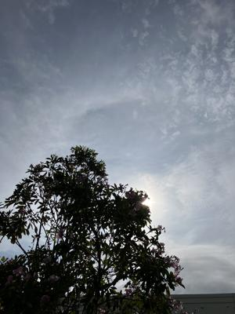
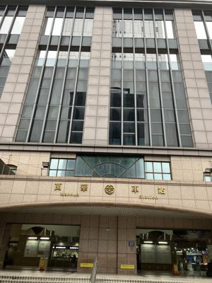
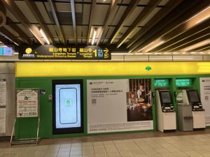
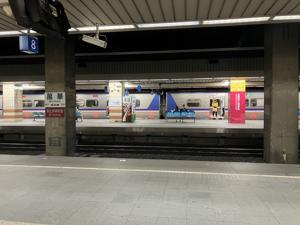
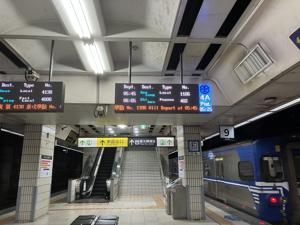
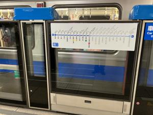

うるがいの話 ある日
最新: 昭和の日【うるがいの話 ある日】とは 一日だけのプログです
『うるがいの話』の最新一日だけのプログで、通信料が少なく経済的だ。カニの画像をクリックすると全ての日付が載る『うるがいの話』サイトを表示します
|
|
【うるがいの話】 うるがい(ｳﾙｶﾞｲ urugai)とは、『もずくがに』の名前でとても大きくなります。 |
|---|---|
|
|
【カミマヤーの話】 猫のことを方言でマヤーといいます。カミマヤー（kamimayaa）とは、神の猫のことです。 |
|
【たながぁの音楽】 たながぁ（ﾀﾅｶﾞｰ tanagaa）とは手長えびのことで、何種類かあり大きいのは車 エビぐらいになります。 |

|
【ぶながぁの話】 ぶながぁ(ﾌﾞﾅｶﾞｰ bunagaa)とは、赤い髪の毛、赤い身体、そして身長は１ｍ２０ｃｍ ぐらい、川の蟹を食べているの目撃された。場所は沖縄県国頭郡大宜味村のと ある村僕の隣近所に住んでいる爺さんから、聞いた話です。 |
|
|
【ギーマの話】 ギーマ(giima)とは、山原の里山に咲くスズランに似た、 花を付けます。実は食べられます、 気が付くと口の周りが紫になっています。 |
2026年04月30日 (木）昭和の日
15:51

台湾の電車に乗りました。去年のツアー旅行で、電車に乗れなか
ったと言った夫婦の話が、よみがえます。なんで、乗れなかった
のでしょう・・・・・。
２日目の６時１５分：宿泊ホテルは萬華站（台湾鉄道）と一体

２日目の６時４４分：龍山寺駅のＭＲＴ乗車口、下見です

２日目の９時５３分：萬華站（台湾鉄道）の駅の中です。初乗り

４日目の５時２５分：台湾鉄道で台北駅で降りる

４日目の６時１９分：台北駅ＭＲＴで龍山寺駅へ向かう

台湾鉄道は山手線で、ＭＲＴは地下鉄のイメージです。そして広
い台北駅は、新宿駅と似ていると思いました。台湾悠遊カードを
利用しました、オキカと同じです。
マンション売買の所得税納付の確定申告による、口座引き落とし
が完了しましたと税務署から、今日通知がありました。これでマ
ンション売買にかかる一連の作業は、完了しました。思ったより
少なかったス。